Cases & Results
Selected Clinical Cases & Treatment Results
Clinical Case
Before Treatment
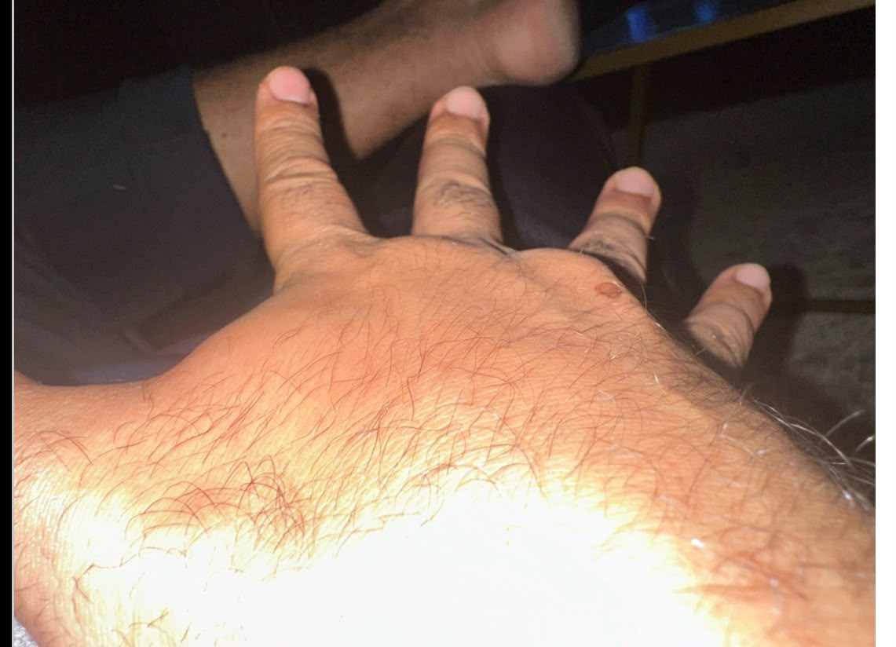
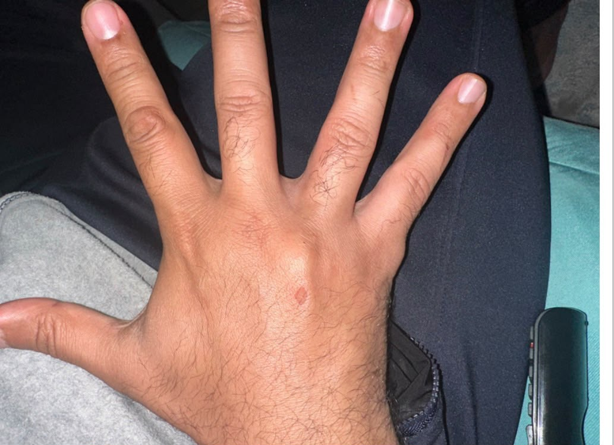
After Treatment
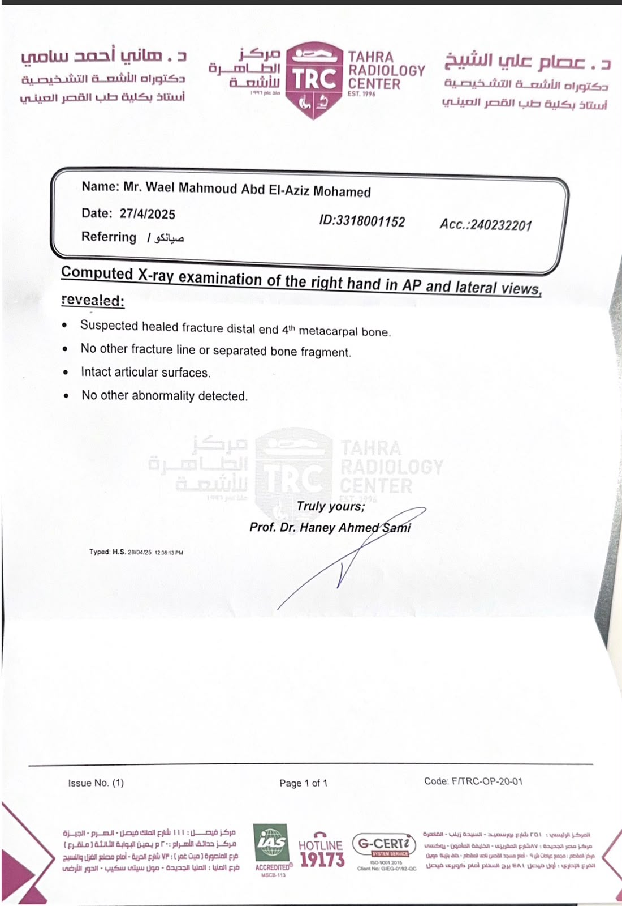

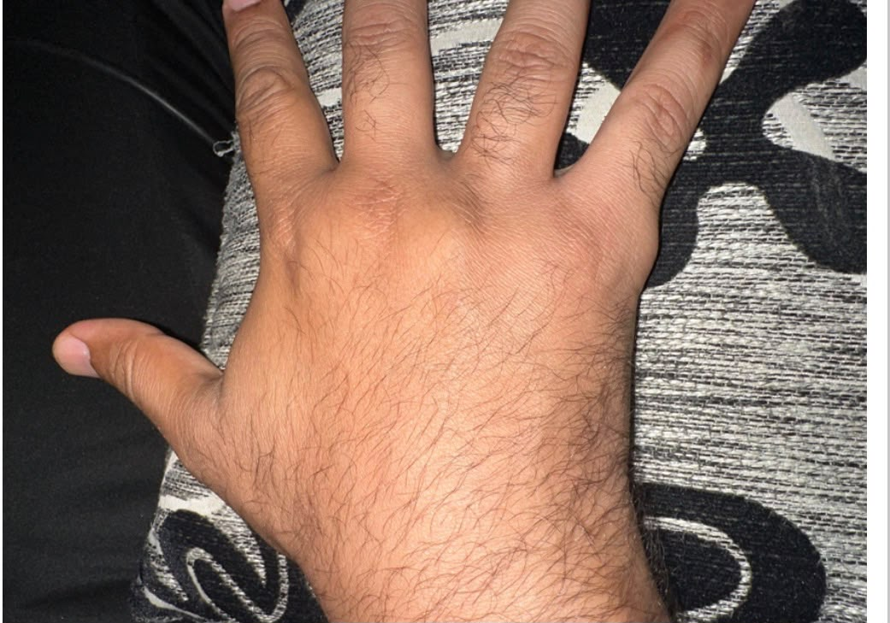
Case Result
Significant improvement following the treatment program.
Clinical Case
Before
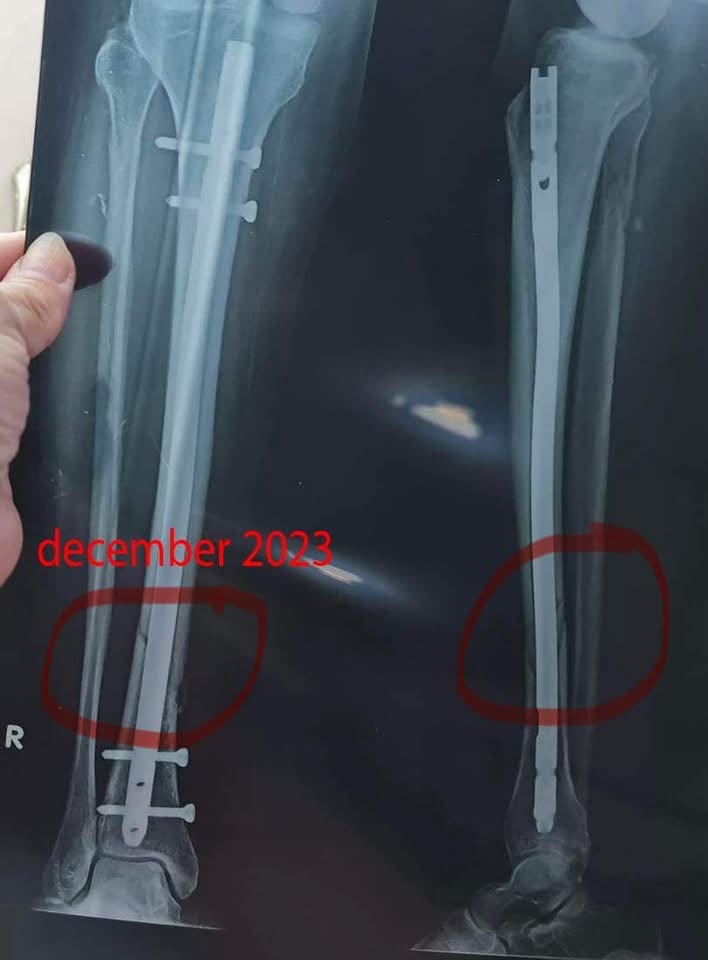
During Treatment
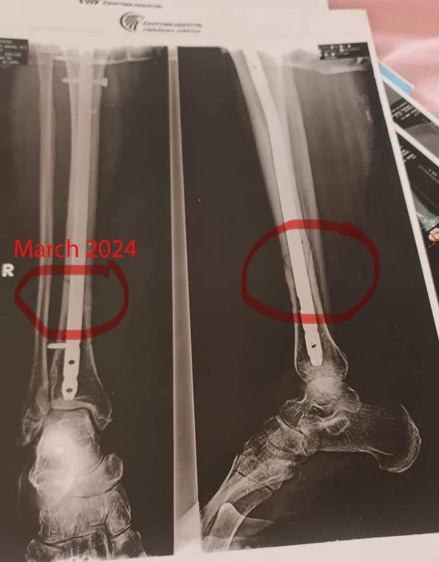
Final Result
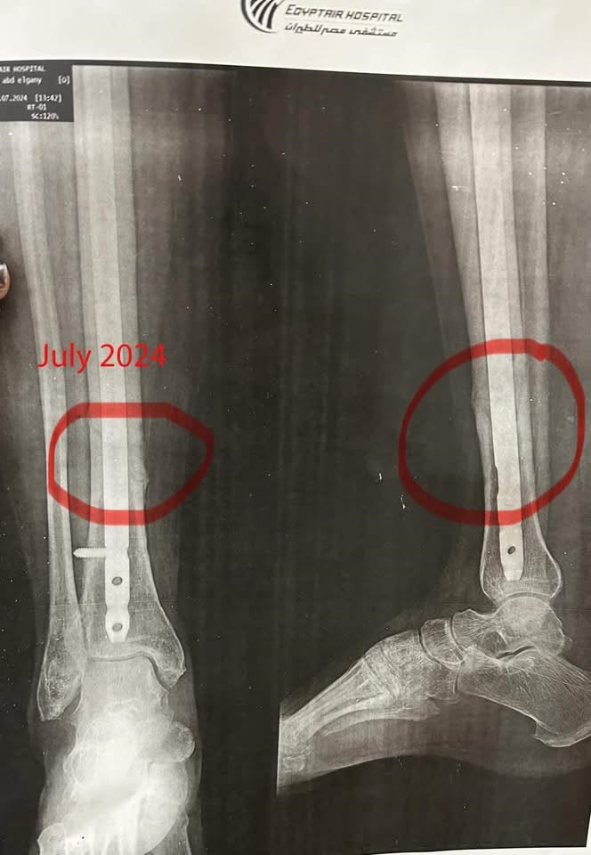
Case Result
قال تعالى:
﴿ يَا أَيُّهَا الَّذِينَ آمَنُوا إِن تَتَّقُوا اللَّهَ يَجْعَل لَّكُمْ فُرْقَانًا ﴾
[الأنفال: ٢٩].
من فضل الله عليا، ويمكن من أهم الوصول إلى الماجستير أو الدكتوراه
أو أي درجة علمية، ما تفضل الله بي علي في هذه الحالة.
أستاذة هويدة كبير طاقم ضيافة ومن أعز الناس إلى قلبي
Howaida Abd Elghani
حدث لها كسر مضاعف في الرجل اليمنى أبريل 2023،
وهذا أدى إلى تركيب مسمار نخاعي ومسامير و Bone Marrow Screw.
وهذا أدى إلى عدم قدرتها على المشي لمدة تزيد عن السنة
أو سنة وثلاثة شهور.
وبفضل الله أولاً، ثم وضع Plan of Treatment،
وأفتخر بتأثير أحدث أجهزة العلاج الطبيعي في مستشفى مصر للطيران
التي أفتخر أن أنتمي إليها.
تم الالتئام شبه الكامل للكسر بعد مرور أكثر من سنة،
بعد مجرد 15 جلسة فقط.
مع العلم تم عمل X-Ray بتاريخ:
December 2023
April 2024
وتم بدء علاجي لها:
May 2024
وهذا بفضل الله تعالى و نعمته.
بعد الجلسات July 2024.
وهذا ينفي Time Factor أو يؤكد التأثير الكلي للعلاج الطبيعي
دون تأثير عامل الوقت.
لأن لو كان عامل الوقت هو سبب الالتئام،
لكان حدث خلال السنة قبل بدء العلاج الطبيعي.
Clinical Case
Before
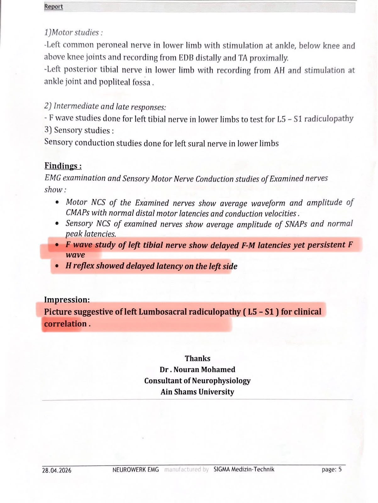
After
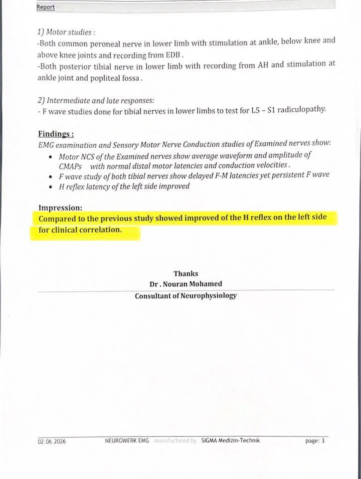
Case Result
﴿وَإِذَا مَرِضْتُ فَهُوَ يَشْفِينِ﴾.
الحمد لله والشكر لله.
من أكتر الحاجات اللي خلتني سعيدة وفخورة بفضل الله عليا،
دي نتيجة رسم عصب لمريضة من مرضاي.
اللي كان عندها Delay أو تأخر في نقل الـ Nerve Impulse
أو النبضات العصبية.
نتيجة ضغط الغضروف على الأعصاب
(عرق النسا)
Sciatic Nerve Lesion starting from L4 till S3.
بفضل الله، بعد تجربة Opening Techniques
و Manual Therapy،
شغل يدوي فقط على هذا العصب.
التأخر في النبضات العصبية تحسن بشكل ملحوظ،
والتنميل والألم للمريض شبه اختفى.
Rawda
Clinical Case
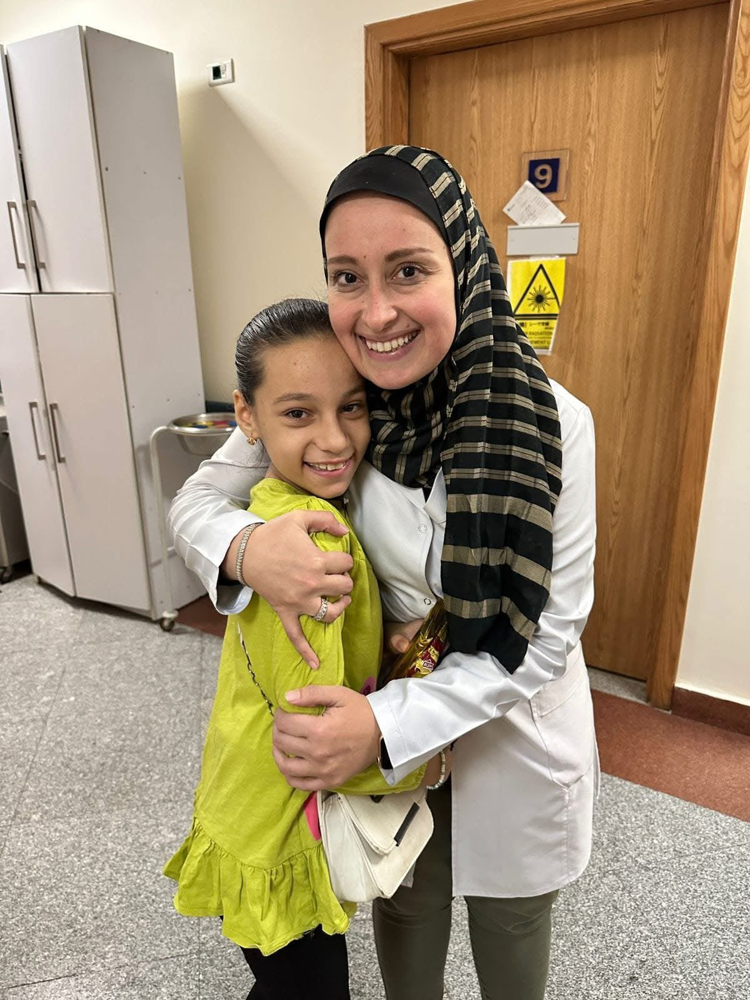
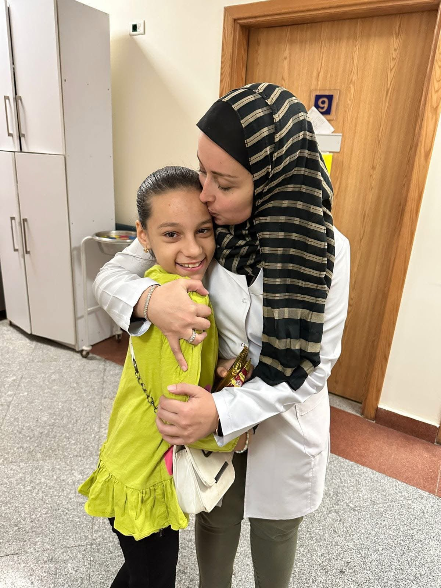